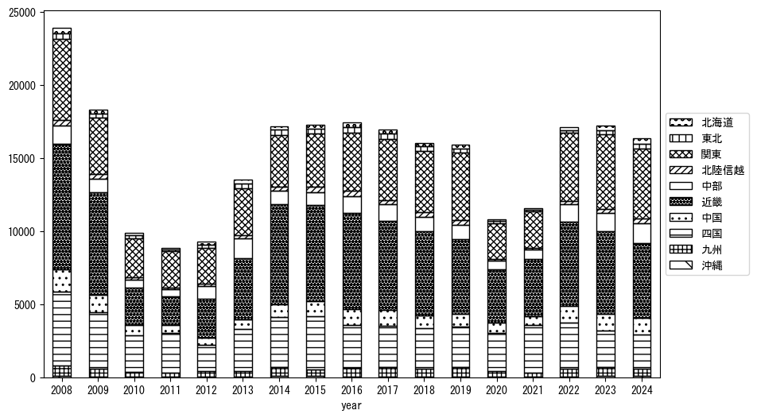
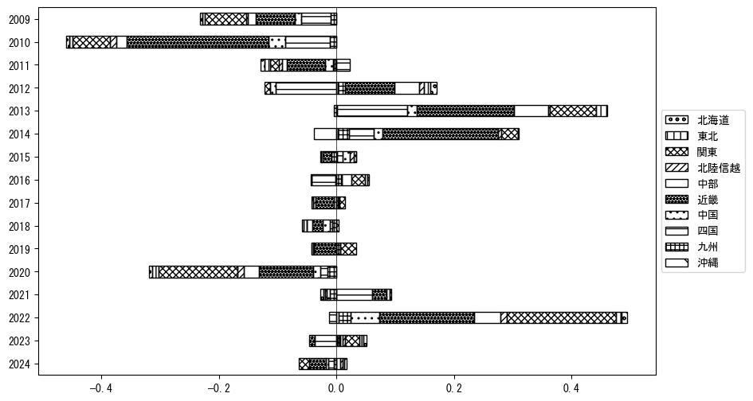

-
トップ
-
徳島県
徳島県
１．延べ宿泊者（総数）の推移
時系列グラフ
 図１：徳島県内の従業員数100人以上の宿泊施設での延べ宿泊者数（国外、居住地不詳を含む総数）。
図１：徳島県内の従業員数100人以上の宿泊施設での延べ宿泊者数（国外、居住地不詳を含む総数）。
基本統計量
表１：従業員数100人以上の宿泊施設での延べ宿泊者の総数（国外、および居住地不詳を含む）に関する基本統計量。単位は人泊。平均は１か月あたりの平均値を表す。図１に対応。
| 2008年 |
35,326 |
8,425 |
25,477 (12月) |
55,655 (8月) |
| 2009年 |
23,343 |
7,262 |
15,480 (12月) |
38,617 (8月) |
| 2010年 |
16,166 |
9,913 |
5,317 (6月) |
34,453 (3月) |
| 2011年 |
15,172 |
4,141 |
9,509 (7月) |
20,555 (11月) |
| 2012年 |
18,664 |
4,848 |
11,298 (2月) |
26,565 (8月) |
| 2013年 |
23,574 |
4,915 |
15,315 (9月) |
29,961 (11月) |
| 2014年 |
26,848 |
7,623 |
18,655 (2月) |
46,767 (8月) |
| 2015年 |
27,585 |
7,601 |
18,644 (1月) |
48,079 (8月) |
| 2016年 |
27,872 |
6,181 |
19,872 (2月) |
43,607 (8月) |
| 2017年 |
24,455 |
5,457 |
16,145 (1月) |
31,680 (7月) |
| 2018年 |
25,079 |
8,707 |
10,137 (2月) |
44,499 (8月) |
| 2019年 |
26,619 |
8,006 |
19,211 (6月) |
47,019 (8月) |
| 2020年 |
17,611 |
9,480 |
870 (5月) |
31,032 (11月) |
| 2021年 |
19,206 |
7,765 |
10,726 (6月) |
34,017 (8月) |
| 2022年 |
26,699 |
9,883 |
11,452 (2月) |
48,936 (8月) |
| 2023年 |
28,638 |
7,827 |
15,204 (2月) |
46,097 (8月) |
２．宿泊者数の重心（年平均の推移）
図２：徳島県内の従業員数100人以上の宿泊施設での延べ宿泊者数（国外、居住地不詳を除く）の重心（年平均の推移）。
全画面表示
重心の前年平均からの移動距離と方位、および緯度・経度
表２：重心の前年平均からの移動距離と方位、および緯度・経度。図２に対応。
| 2008年 |
— |
— |
34.9944 |
136.1226 |
| 2009年 |
西南西 |
8.8km |
34.9685 |
136.0316 |
| 2010年 |
東北東 |
24.0km |
35.0140 |
136.2891 |
| 2011年 |
南西 |
17.4km |
34.9096 |
136.1470 |
| 2012年 |
北東 |
27.3km |
35.0862 |
136.3549 |
| 2013年 |
南西 |
4.5km |
35.0559 |
136.3216 |
| 2014年 |
西南西 |
26.4km |
34.9623 |
136.0551 |
| 2015年 |
北東 |
3.9km |
34.9869 |
136.0860 |
| 2016年 |
東北東 |
15.9km |
35.0629 |
136.2340 |
| 2017年 |
南東 |
3.8km |
35.0389 |
136.2632 |
| 2018年 |
東 |
7.8km |
35.0438 |
136.3489 |
| 2019年 |
東北東 |
5.8km |
35.0560 |
136.4103 |
| 2020年 |
西南西 |
54.1km |
34.8191 |
135.8930 |
| 2021年 |
南西 |
7.2km |
34.7659 |
135.8476 |
| 2022年 |
東北東 |
42.0km |
34.9612 |
136.2406 |
| 2023年 |
北東 |
24.1km |
35.0884 |
136.4543 |
運輸局別延べ宿泊者数
時系列（年平均）

図３：徳島県内の従業員数100人以上の宿泊施設での１か月あたり平均延べ宿泊者数（国外、居住地不詳を除く）の運輸局別内訳。
寄与度（前年からの変化率に対する）

図４：徳島県内の従業員数100人以上の宿泊施設での運輸局別延べ宿泊者数（国外、居住地不詳を除く）から求めた寄与度。
３．宿泊者数の重心（月別）
図５：徳島県内の従業員数100人以上の宿泊施設での延べ宿泊者数（国外、居住地不詳を除く）の重心（月別）。観測期間は2008年1月から2023年12月まで。
全画面表示
全期間（2008年1月～2023年12月）の平均と月別平均の比較
表３：全期間の平均から月別平均までの移動距離と方位、および緯度・経度。図５に対応。
| 全期間 |
— |
— |
34.9884 |
136.1937 |
| 1月 |
南西 |
24.7km |
34.8627 |
135.9705 |
| 2月 |
南西 |
15.4km |
34.8986 |
136.0652 |
| 3月 |
東北東 |
10.8km |
35.0410 |
136.2931 |
| 4月 |
北北東 |
7.2km |
35.0504 |
136.2180 |
| 5月 |
北東 |
8.8km |
35.0459 |
136.2597 |
| 6月 |
西南西 |
11.2km |
34.9638 |
136.0744 |
| 7月 |
南西 |
18.9km |
34.8726 |
136.0419 |
| 8月 |
南南西 |
8.9km |
34.9106 |
136.1700 |
| 9月 |
東 |
10.7km |
35.0056 |
136.3095 |
| 10月 |
北北東 |
6.3km |
35.0384 |
136.2276 |
| 11月 |
北東 |
38.0km |
35.2047 |
136.5172 |
| 12月 |
南南西 |
2.9km |
34.9661 |
136.1778 |
運輸局別延べ宿泊者数
月別平均（2008年1月～2023年12月）
 図６：徳島県内の従業員数100人以上の宿泊施設での延べ宿泊者数（国外、居住地不詳を除く）の運輸局別内訳（月別）。
図６：徳島県内の従業員数100人以上の宿泊施設での延べ宿泊者数（国外、居住地不詳を除く）の運輸局別内訳（月別）。
寄与度（全期間の平均から月別平均への変化率に対する）
 図７：徳島県内の従業員数100人以上の宿泊施設での運輸局別延べ宿泊者数（国外、居住地不詳を除く）から求めた寄与度（月別）。
図７：徳島県内の従業員数100人以上の宿泊施設での運輸局別延べ宿泊者数（国外、居住地不詳を除く）から求めた寄与度（月別）。
４．データのダウンロード
出典：観光庁「宿泊旅行統計調査」に収録された「施設所在地、居住地別延べ宿泊者数（従業員数100人以上の施設）」
国土地理院「白地図（地理院タイル）」（図２と図５）